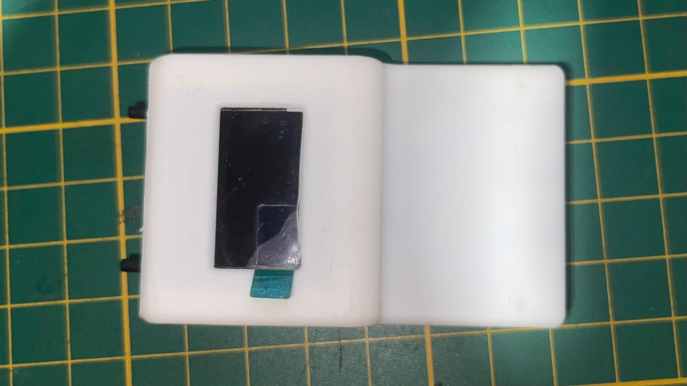
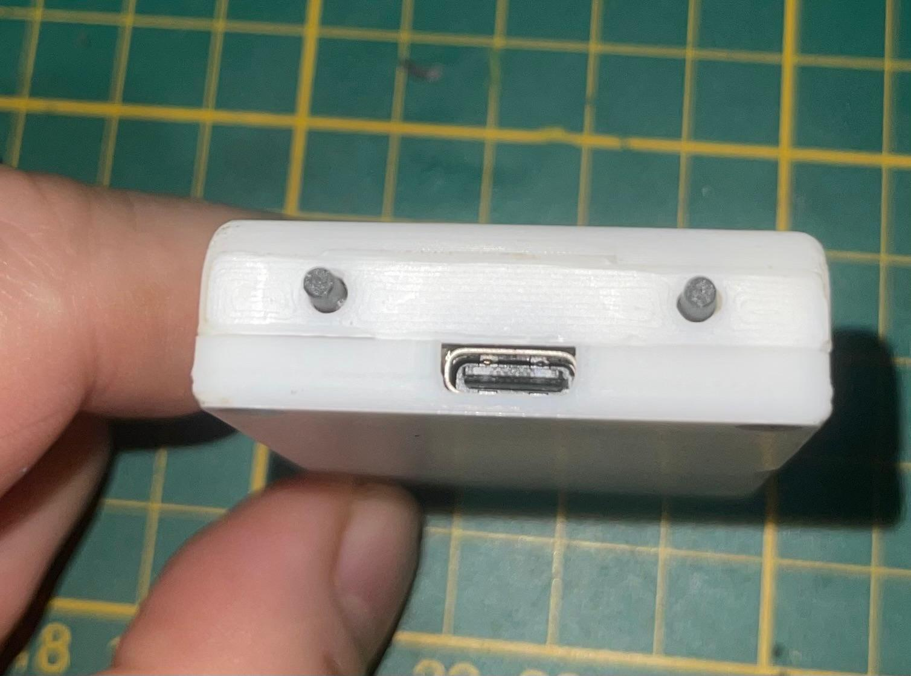
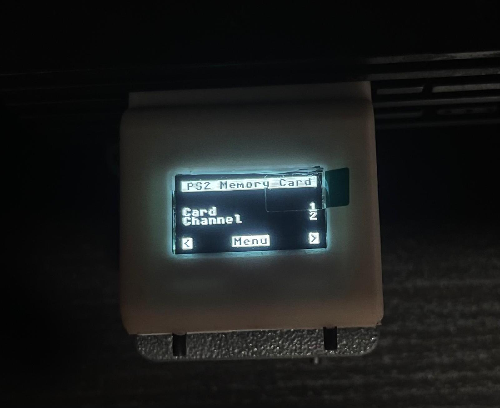

Productos Playstation
Sd2psx Memoricard Ps/Ps2
  ¿Qué es SD2PSX? SD2PSX es una solución de hardware abierto y de código abierto para emular tarjetas de memoria PS1 y PS2, lo que le permite almacenar un número ilimitado de guardados para juegos de PS1 y PS2. ¿Qué puede hacer SD2PSX? Soporte para PlayStation 1 Crea tarjetas de memoria virtuales (128KiB) para guardar juegos de PS1; compatible con PS1 y PS2 Inicie FreePSXBoot con Unirom o Tonyhax Cambie automáticamente a la tarjeta correcta cuando se empareja con un sistema ODE compatible Soporte de PlayStation 2 Crea tarjetas de memoria virtuales (8MiB) para guardar juegos de PS2; compatible con PS2, PSX y sistemas arcade Lanza FreeMCBoot, OpenTuna y otros exploits ¡Totalmente código abierto y hardware abierto con más características que llegarán en el futuro! /p> Ver Proyecto
MSX Kit - Proyecto 2

Un kit avanzado para personalizar tu consola MSX. Incluye todo lo necesario.
Ver ProyectoNuevo Proyecto MSX

Descripción de un nuevo proyecto para MSX. Aquí puedes agregar cualquier proyecto adicional que desees compartir.
Ver Proyecto